En primer lugar, se deben escribir los ficheros que contienen las especificaciones de los casos de prueba unitarias para cada componente individual.
Para probar el software utilizando las utilidades y herramientas ofrecidas por Mocha-Chai para JavaScript, es necesario conocer y comprender su funcionamiento:
Generalmente los ficheros que albergan los casos de prueba tienen extensión spec.js. y presenta la siguiente estructura:
Estructura básica de un fichero de prueba Mocha
La cabecera
En la parte superior del fichero de especificaciones se puede ver algo similar a lo siguiente:
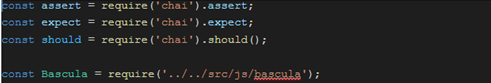
- Importación de las interfaces chai, que permiten realizar las aserciones.
- Importación de la clase del objeto o componente que va ser sometido al proceso de prueba.
Describe
Este elemento permite definir los bloques de pruebas relacionados entre sí. Es posible concatenar varios “describe” para organizar adecuadamente la estructura de los tests.
La función de descripción es para agrupar especificaciones relacionadas, por lo general, cada archivo de prueba tiene uno en el nivel superior. El parámetro cadena sirve para nombrar la colección de especificaciones y se concatena con especificaciones para crear el nombre completo de una especificación.
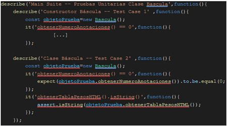
It
Cada elemento “it” es una prueba. Existe la posibilidad de definir todas las pruebas (it) que sean necesarias dentro de un elemento describe. Las pruebas pueden estar divididas entre varios elementos de tipo “describe”. Esto es útil si queremos diferenciar varios bloques de pruebas en un mismo fichero.
Diferentes estilos de aserciones: assert, expect y should.
Chai soporta diferentes interfaces para escribir aserciones para las pruebas, lo que permite al desarrollador escoger el estilo que le resulte más cómodo. Los estilos BDD (Behavior Driven Development) - expect y should - proporcionan un lenguaje expresivo y un estilo legible, mientras que el estilo TDD (Test Driven Development) - assert - proporciona una sensación más clásica.
- Estilo Test Driven Development, assert.
El estilo de aserción se expone a través de la interfaz assert. Proporciona la notación clásica de punto de afirmación, similar a la que se incluye con node.js. Este módulo de aserción, sin embargo, proporciona varias pruebas adicionales y es compatible con el navegador.
En todos los casos, el estilo de aserción permite incluir un mensaje opcional como último parámetro en la declaración de aserción. Estos se incluirán en los mensajes de error en caso de que su afirmación no se apruebe.
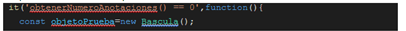
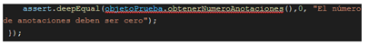
- Estilos Behavior Driven Development, expect y should.
El estilo BDD tiene dos variantes: expect (“esperar”) y should (“debería”). Ambos usan el mismo lenguaje encadenable para construir aserciones, pero difieren en la forma en que se construye inicialmente una aserción. En el caso de should, también hay algunas advertencias y herramientas adicionales para superar las advertencias.
La interfaz expect proporciona una función como punto de partida para encadenar sus afirmaciones de lenguaje. Funciona en node.js y en todos los navegadores.
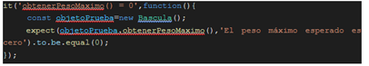
La interfaz should extiende Object.prototype para proporcionar un solo captador como punto de partida para sus afirmaciones de lenguaje. Funciona en node.js y en todos los navegadores modernos excepto Internet Explorer.
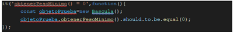
Es posible obtener una descripción detallada de las APIs de aserciones en la web: https://www.chaijs.com/api/.
Ejecución automatizada de las pruebas
Ejecución de pruebas desde el terminal
El fichero package.json es un archivo de definición o manifiesto para nuestro proyecto, en el cual especificamos los datos de configuración y referencias del proyecto como: autor, repositorio, versión, descripción, scripts y sobre todo las dependencias, entre otros. Para posibilitar la ejecución automatizada de los casos de prueba es necesario que el fichero package.json incluya entre las dependencias instaladas el framework mocha, y la entrada “scripts” debe contar con el campo “test” que haga correctamente referencia a mocha y los distintos directorios donde se encuentran los ficheros de prueba (.spec.js).
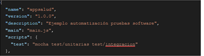
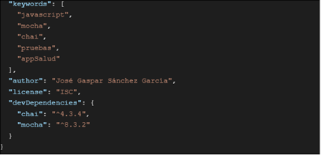
Una vez configurado correctamente el proyecto y desarrolladas las distintas clases y componentes, así como los casos de prueba asociadas a la mismas será posible su ejecución desde la consola de comandos tecleando: npm test.
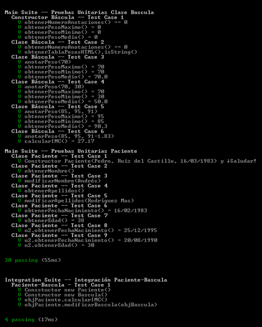
Tras la ejecución de las pruebas se mostrará una pantalla resumen con los resultados obtenidos por cada una de ellas. Cada it ejecutado correctamente aparecerá marcado con una V de color verde (V).
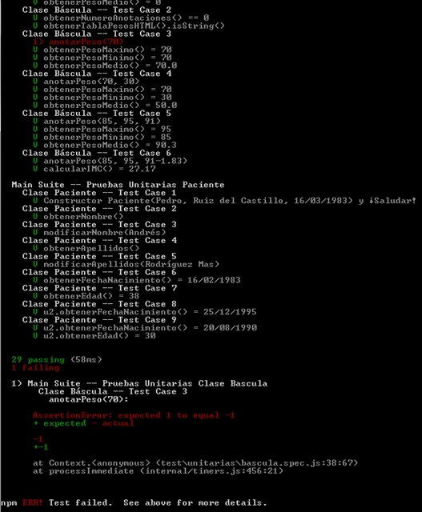
En caso de producirse algún error, nos aparecerá marcado en rojo y en la parte inferior del informe de ejecución nos mostrará una descripción detallada de los valores obtenidos y los esperados.
Generación de informes de ejecución de pruebas en formato HTML
Existen herramientas como Mochawesome que permiten generar informes independientes sobre la ejecución de los casos de prueba en formato HTML/CSS para ayudar a visualizar los resultados. Entre las características de los informes destacan las siguientes:
- Diseño simple, limpio y moderno.
- Gráficos elegantes (a través de ChartJS).
- Soporte para anidación de pruebas y conjuntos.
- Revisión del código de prueba en línea.
- Soporte para agregar información de contexto a las pruebas.
- Diseño responsive y compatible con dispositivos móviles.
- Visualización sin conexión.
- Soporta modo paralelo (parallel mode).
Para poder hacer uso de estos informes simplemente será necesario seguir unos sencillos pasos:
- Instala mochawesome en tu proyecto: npm install mochawesome --save-dev.
- Indica, en el fichero package.json, a mocha que utilice el generador de informes mochasewome: mocha test/unitarias test/integracion -- reporter mochawesome
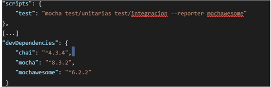
Una vez ejecutado el comando npm test el informe se generará dentro de la carpeta del proyecto un directorio denominado mochawesome-report.
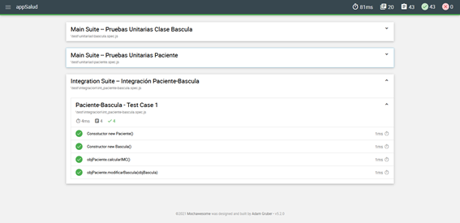